What is a tissue?
Every plant and animal starts as one cell. That cell divides again and again, and the new cells slowly become skin, muscle, bone, nerve, wood, leaf and everything else. This chapter is about how cells team up to do these different jobs.
Levels of organisation
In a multicellular organism, the body is built in levels, like bricks → walls → rooms → building:
- Cell (basic unit of life)
- Tissue (similar cells, one job)
- Organ (two or more tissues, e.g. heart, leaf)
- Organ system (organs working together, e.g. digestive system)
- Organism
Why make tissues at all? Division of labour
In a unicellular organism like Amoeba, one cell does everything: eating, moving, breathing, removing waste. In a multicellular body, different groups of cells specialise in one job each. This sharing of work is called division of labour. A specialist does a job better than a "do-everything" cell, so the whole body works more efficiently and can carry out complex life processes.
Questions from the chapter opening
Try to answer first, then tap to check.
How is the study of cells and tissues significant for understanding life processes and human welfare?
How are tissues in plants and animals different, and why?
How is division of labour at various levels of organisation correlated with structure and function?
Why are plant and animal tissues different?
Plant and animal tissues are different because the two live very different lives. Compare them point by point:
| Point | Plants | Animals |
|---|---|---|
| Movement | Fixed in one place; need to stand firm and upright. | Most move from place to place (sponges are an exception). |
| Cell wall | Rigid cell wall gives strength; many supporting tissues are dead. | No cell wall; cells can change shape, which helps in movement. Most tissues are living. |
| Nutrition | Tissues use sunlight to make food by photosynthesis. | Tissues digest food taken from outside. |
| Transport | Xylem (water) and phloem (food). | Blood carries food, gases and hormones. |
| Growth | Only in certain regions (meristems), and continues throughout life. | Growth happens all over the body and stops after a certain age. |
Meet a scientist: B. G. L. Swamy
An Indian botanist known for his work on plant morphology (form) and anatomy (internal structure). His Kannada book Hasuru Honnu, about plant life in the forests of the Western Ghats, won the Kendra Sahitya Akademi Award in 1978.
Meristems: tissues for growth in plants
A plant grows in three ways:
- it gets longer (stem grows taller, roots go deeper),
- it gets thicker (the stem's girth increases), and
- it grows back after cutting or grazing.
All three need cells that keep dividing. A tissue made of such actively dividing cells is called a meristematic tissue (meristem). There are three kinds, named after where they are found.
3.2.1 Apical meristem: how do plants grow in length?
Activity 3.1: The onion root experiment
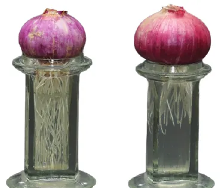
- Place one onion bulb on each of two jars filled with water.
- Measure the root length on days 1, 2 and 3.
- On day 3, cut about 1 cm off the root tips in Jar B. Leave Jar A alone.
- Keep measuring both for four more days.
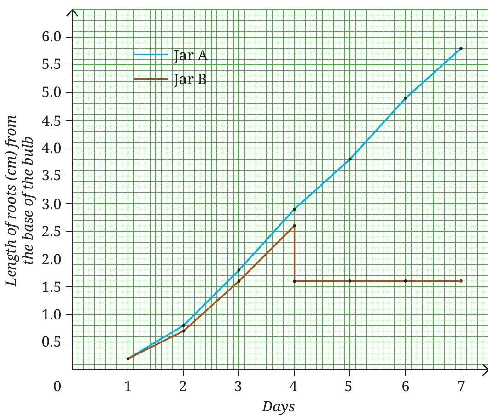
🧅 Try it: the onion root lab
Move the slider through the week. Jar B's root tips get cut at the end of day 3. Watch what happens next.
Conclusion
Roots in Jar A keep growing; roots in Jar B stop growing once their tips are removed. So roots grow in length only from their tips, where cells divide continuously (you saw mitosis in onion root tips in Chapter 2). Shoot tips behave the same way. These growing zones at the tips of roots and shoots are the apical meristems (apex = tip).
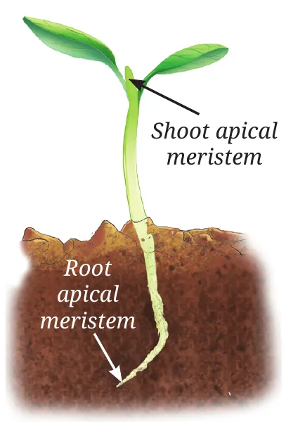
3.2.2 Lateral meristem: how do plants grow in girth?
Stems of dicot plants (like mango, neem, teak) do not just grow taller; they also get thicker every year. In the stem there is a ring of dividing cells. They add new cells both towards the inside and towards the outside, in circles, so the stem's diameter grows. This side (lateral) growing tissue is the lateral meristem.
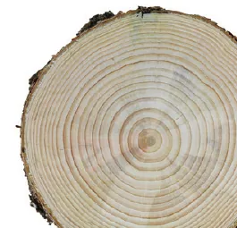
🌳 Annual rings
The lateral meristem makes one ring of wood each year. Count the rings to find the age of the tree. A wide ring means a good year (enough rain, warmth); a narrow ring means a hard year (drought, cold). So rings also record the climate the tree lived through.
🪵 Try it: grow a teak trunk
Slide the age. Each year the lateral meristem adds one ring. Ring widths follow the real teak data in Question 7 (fast growth between 10 and 20 years).
3.2.3 Intercalary meristem: how do plants grow back after cutting?
If you cut the tip of a young stem, it stops getting taller, but new branches come out from the nodes. A node is the point on a stem where leaves or branches arise; the part of the stem between two nodes is an internode. The intercalary meristem lies at the base of the internode (just above a node). That is why a trimmed hedge becomes bushy and a mowed lawn or grazed grass grows back again.
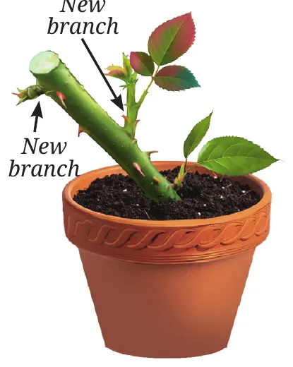
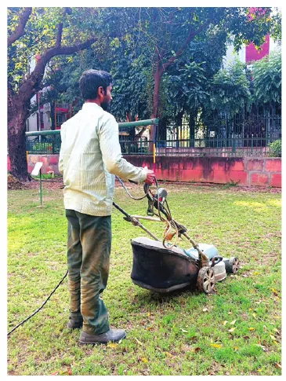
| Meristem | Where? | What does it do? |
|---|---|---|
| Apical | Tips of roots and shoots | Increases length |
| Lateral | In a ring along the circumference of stems (and roots) | Increases girth (thickness) |
| Intercalary | Base of internodes / at nodes (e.g. grasses) | Regrowth after cutting or grazing; branching |
Features of meristematic cells
Small cells with thin walls easy to divide
A thin wall does not get in the way of splitting into two.
Large, prominent nucleus controls division
The nucleus holds the DNA that must be copied every time the cell divides.
Dense cytoplasm, many organelles busy factory
Lots of material to build new cells quickly.
Vacuoles generally absent no storage
The cell is not storing anything yet, and its space is needed for active cytoplasm.
Tightly packed, no intercellular spaces
New cells are packed side by side as they form.
📝 Why do meristem cells lack vacuoles? (asked in the text)
Vacuoles are mainly for storage (water, food, waste). Meristem cells are not storing; they spend all their energy on dividing. A big vacuole would fill the cell and push the dense cytoplasm aside, slowing division. Vacuoles form later, when the cell stops dividing and specialises.
From meristem to permanent tissue: differentiation
Some new cells made by a meristem stay meristematic. Others lose the ability to divide, change their shape and structure and take up one job (support, transport or storage). These cells form permanent tissues.
Permanent tissues
If you look at a thin transverse section (T.S., a cross-section) of a sunflower stem under a microscope, you see many different kinds of cells in neat layers. Each layer is a permanent tissue with its own job.
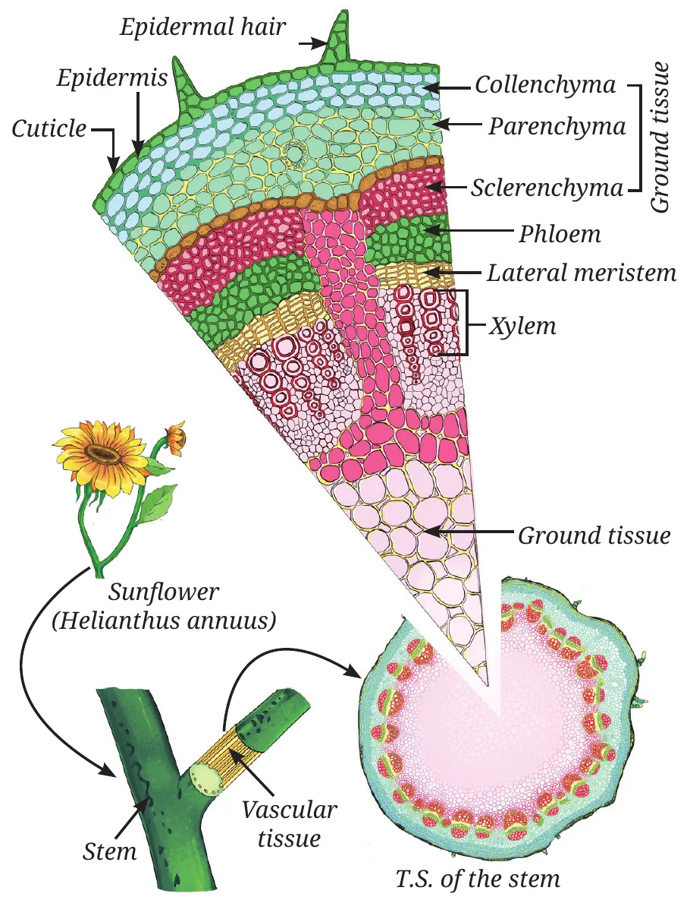
Complex permanent tissue: made of more than one type of cell working together (xylem, phloem).
(i) Protective tissue: epidermis
The epidermis is the outermost layer of all plant parts. It is a single layer of flat, rectangular, tightly packed cells with no gaps, so germs and water cannot easily pass.
- Cuticle: a waxy layer of cutin on the epidermis. It cuts down water loss and protects from injury and parasites. Desert plants have a thick cuticle.
- Hairs: in roots, epidermal cells grow into root hairs that increase the surface area for absorbing water and minerals.
- Stomata: tiny pores in the leaf epidermis for gas exchange and transpiration (loss of water vapour). Transpiration creates a pull that draws water up the xylem, and also helps remove some wastes.
🌲 Ready to go beyond: cork (bark)
Young plants have a one-cell-thick epidermis. In older stems, some cells under the epidermis start dividing again and become the cork cambium (a lateral meristem). It produces cork cells: dead, tightly packed, with a substance that makes them waterproof and airtight. Cork forms the bark of a tree.
(ii) Supporting tissue: simple permanent tissues
Why does a plant stay upright? Why does a fresh twig bend but a dry twig snap? Why are seed coats hard, and how do water plants float? Three simple tissues answer these:
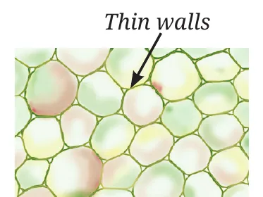
Living, thin walls, loosely packed with spaces. Stores food; does photosynthesis in green parts; air-filled parenchyma helps water plants float.
Tap to zoom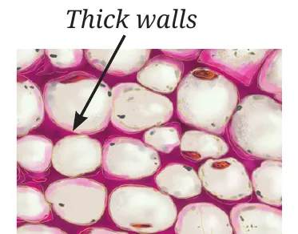
Living, walls thickened at the corners by pectin (rubber-like). Gives support with flexibility, so stems and tendrils bend without breaking.
Tap to zoom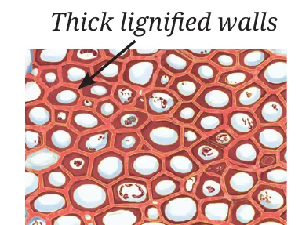
Mostly dead, very thick walls of lignin. Hard and strong (woody). Found in stems, leaf veins, seed coats, coconut husk and walnut shell.
Tap to zoom| Feature | Parenchyma | Collenchyma | Sclerenchyma |
|---|---|---|---|
| Living or dead | Living | Living | Mostly dead |
| Cell wall | Thin | Thick at corners (pectin) | Thick all round (lignin) |
| Intercellular space | Present | Very little | Absent |
| Main job | Storage, photosynthesis, floating | Flexible support | Strength, hardness |
| Example | Potato, pith, leaf | Leaf stalk, young stem, tendrils | Coconut husk, jute fibre, nut shells |
📝 Memory trick
Parenchyma = Pantry (stores food). Collenchyma = Corners (and flexible). Sclerenchyma = Strong and Stiff (and dead).
(iii) Conducting tissues: complex permanent tissues
How does water reach the top of a tall tree, and how does sugar made in a leaf reach the roots? Through two pipe systems, xylem and phloem. They are called complex tissues because each is made of several different cell types working together.
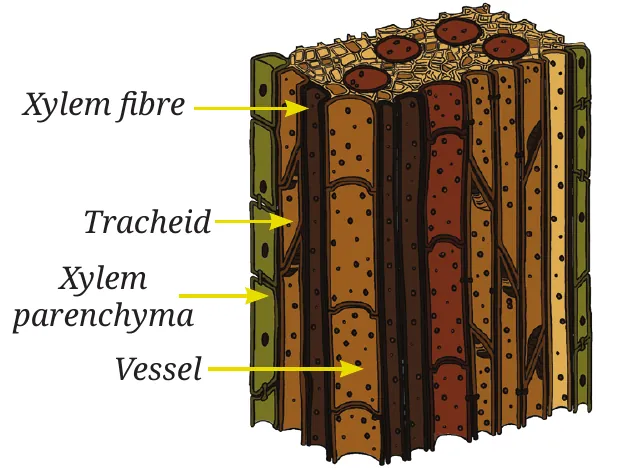
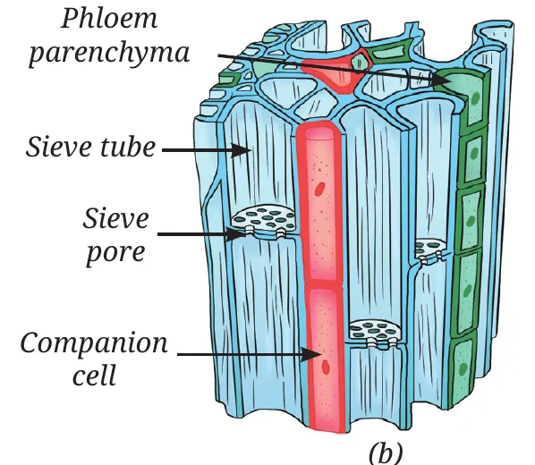
| Xylem | Phloem | |
|---|---|---|
| Carries | Water and minerals, from roots up to other parts | Food (sugars), from leaves to other parts (up and down) |
| Parts | Tracheids, vessels, xylem parenchyma, xylem fibres | Sieve tubes, companion cells, phloem parenchyma, phloem fibres |
| Living or dead | Mostly dead. Only xylem parenchyma is living. | Mostly living. Only phloem fibres are dead. |
| Pipes | Tracheids and vessels: tubular, thick-walled | Sieve tubes: long cells joined end to end through perforated walls (sieve plates) |
| Extra job | Gives the plant strength | Phloem parenchyma stores food, resin, tannins, latex |
Who does what in phloem?
- Sieve tubes: the actual pipes that carry food.
- Companion cells: special parenchyma cells beside the sieve tubes. They control the sieve tube cells and manage the loading and unloading of sugars.
- Phloem parenchyma: storage. Phloem fibres: dead, sclerenchyma-like, give strength.
📝 Don't mix them up
Xylem carries water, phloem carries food: "Phloem = Food" (both sound like "f"). Xylem moves one way (up); phloem moves both ways.
Plant tissue systems
Tissues in a plant do not work alone. They are grouped into three larger tissue systems, found in the root, stem and leaf alike:
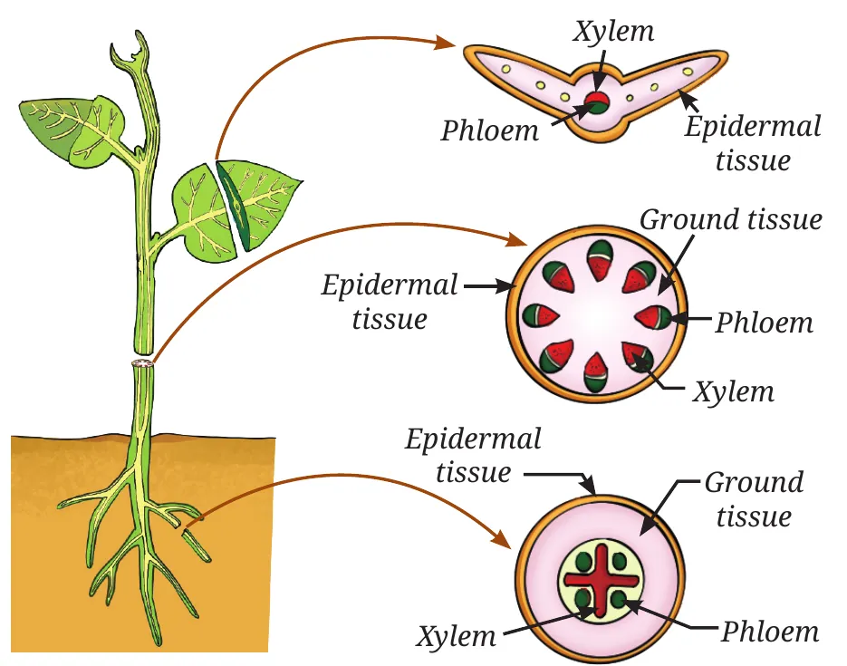
1. Dermal tissue system the skin
Outer covering (epidermis, later cork). Protects inner parts and reduces water loss.
2. Ground tissue system the filling
The main body between the skin and the pipes. Made of parenchyma, collenchyma and sclerenchyma.
3. Vascular tissue system the plumbing
The conducting tissues, xylem and phloem.
Plant tissues at a glance
Meristematic (can divide)
Permanent (cannot divide)
Meet the scientists: Sipra Guha Mukherjee and S. C. Maheshwari
These Indian scientists made a breakthrough in plant tissue culture: they grew complete plants from anther culture (pollen-bearing part of a flower) on an artificial nutrient medium in the lab. Their work helped crop improvement and modern agriculture.
Animal tissues: epithelial tissue
Blink. Make a fist. Take a deep breath. Touch something cold. Each of these uses a different animal tissue. Animals have four main types of tissue:
3.3.1 Epithelial tissue: structure and functions
Epithelial tissue forms the outer covering of the body (skin) and lines the inside of organs such as the mouth, lungs, blood vessels and intestine. Its cells are closely packed with almost no space between them. This keeps germs out, reduces water loss, and controls what is absorbed, secreted or passed across.
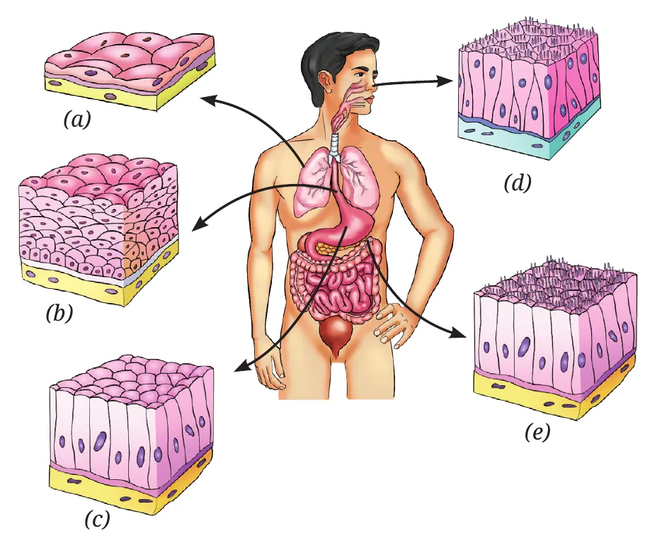
| Function | Structure | Where |
|---|---|---|
| Exchange: fast diffusion of gases and liquids | One layer of thin, flat cells (a) | Blood vessels, lungs (air sacs) |
| Protection: from injury, friction, germs | Many layers; outer cells flat and tightly packed (b) | Skin, mouth, oesophagus |
| Secretion: mucus, enzymes, hormones, sweat, saliva | Cuboidal or columnar gland cells (c) | Salivary glands, sweat glands, stomach lining |
| Sensing: smell, taste, sound, balance | Receptor cells with hair-like cilia (d) | Nose, taste buds, inner ear |
| Absorption: nutrients and water | One layer of tall, pillar-like cells, often with tiny hair-like projections (e) | Lining of the small intestine |
Structure fits function
Where things must pass through quickly (lungs, blood vessels), the epithelium is thin, one layer. Where the body must be protected from rubbing (skin, food pipe), it is many layers thick.
Connective tissue
A tissue that connects and supports other tissues is a connective tissue. Blood and bone are both connective tissues, yet blood is a liquid and bone is rock-hard. The difference lies in the matrix, the material in which the cells are embedded:
- Blood: matrix is a watery fluid (plasma).
- Bone: matrix is hard and rigid (calcium and phosphorus compounds).
- Cartilage: matrix is soft and jelly-like, so it bends.
Blood: a fluid connective tissue
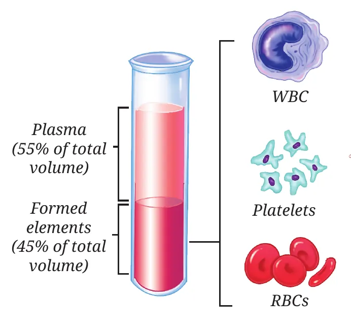
Activity 3.2: Blood in everyday life
| Experience | What you notice | Which part of blood explains it? |
|---|---|---|
| A small cut on the skin | Red blood oozes out; a clot forms after some time | Red colour: haemoglobin (iron-rich protein) in RBCs. Clot: platelets. |
| A skin infection | Area turns red and swollen; maybe fever and pus | WBCs gather at the infection to fight germs, causing inflammation and pus. |
| Exercise or running | Faster breathing; face turns red | Muscles need more oxygen; more blood flows, carried by RBCs. |
Remember
- RBCs carry oxygen (haemoglobin); live about 4 months (about 120 days) and are replaced regularly.
- WBCs fight infection.
- Platelets help blood clot.
- Plasma carries dissolved food, hormones, wastes.
Bone, cartilage, tendon and ligament
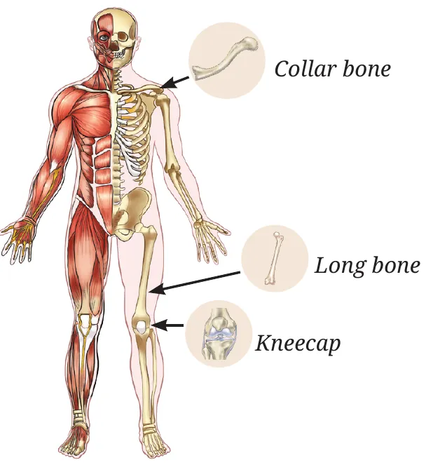
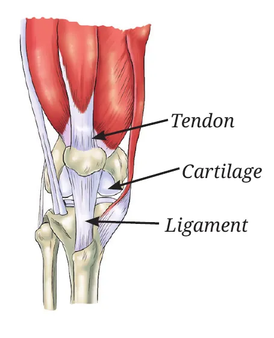
Activity 3.3: Feel your connective tissues
| Do this | You feel | Job | Tissue |
|---|---|---|---|
| Touch your elbow | Hard, rigid | Strength, support, protection | Bone |
| Fold your ear / press your nose tip | Soft, bends, springs back | Flexibility; cushions bone ends, absorbs shock | Cartilage |
| Hold your forearm and wiggle fingers | Movement in the forearm | Joins muscle to bone; makes movement happen | Tendon |
| Raise your leg as far as the knee allows | Joint stops at a limit | Joins bone to bone; gives stability, prevents dislocation | Ligament |
📝 Tendon or ligament?
Tendon: muscle To bone (tendon = "muscle-tie"). Ligament: bone to bone, Limits movement. This is a favourite exam trap (see Assertion-Reason C).
Muscular tissue: can we control movement?
Some movements we control (running, writing, lifting): these are voluntary. Others happen on their own (heartbeat, food moving in the intestine): these are involuntary. Three kinds of muscle do this work.
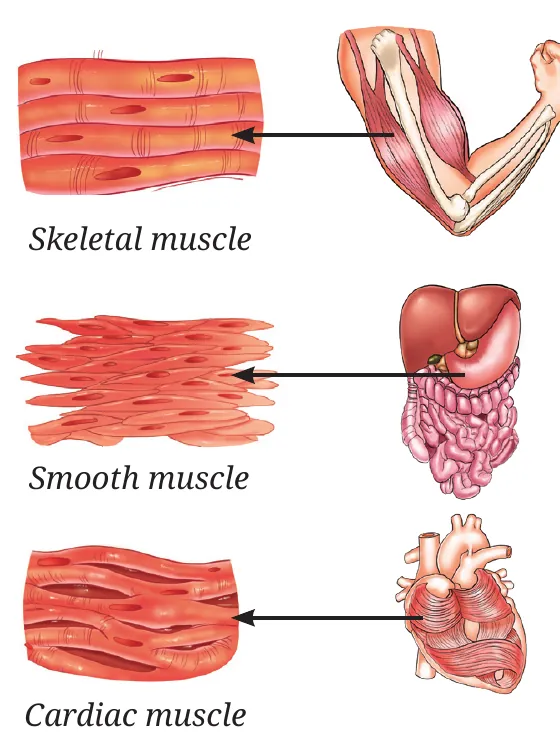
| Skeletal | Smooth | Cardiac | |
|---|---|---|---|
| Where | Attached to bones | Stomach, intestine | Only heart |
| Control | Voluntary | Involuntary | Involuntary |
| Shape | Long, cylindrical, unbranched | Spindle-shaped | Cylindrical, branched |
| Nuclei | Many (multinucleate) | One | One |
| Striations | Yes (light and dark bands) | No | Faint |
| Work | Quick movement, tires | Slow, continuous | Rhythmic, never tires |
Nervous tissue: sensing and responding
Pulling your hand away from a hot pan, or remembering an old song: both are the work of nervous tissue, the body's control and communication network. The brain is the control centre. Muscles cannot work on their own; they wait for instructions from nerves. (During exercise, the brain tells the heart to beat faster.)
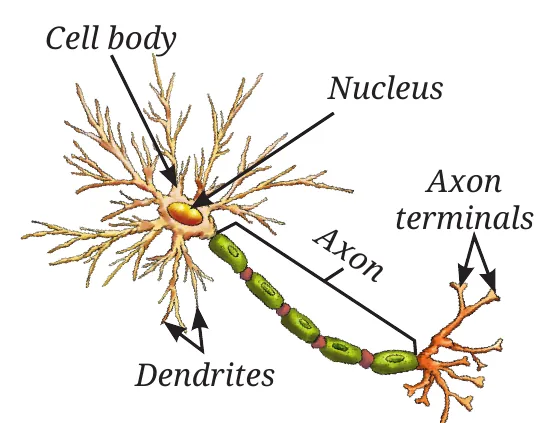
- 1Dendrites: short branches that receive signals from other neurons.
- 2Cell body: contains the nucleus; controls the cell.
- 3Axon: a long fibre that carries the message away from the cell body.
- 4Axon terminals: pass the message on to the next cell (neuron, muscle or gland).
📝 Direction of a message
Dendrite → cell body → axon → axon terminal. Remember "Do Cats Always Talk?"
The musculoskeletal system
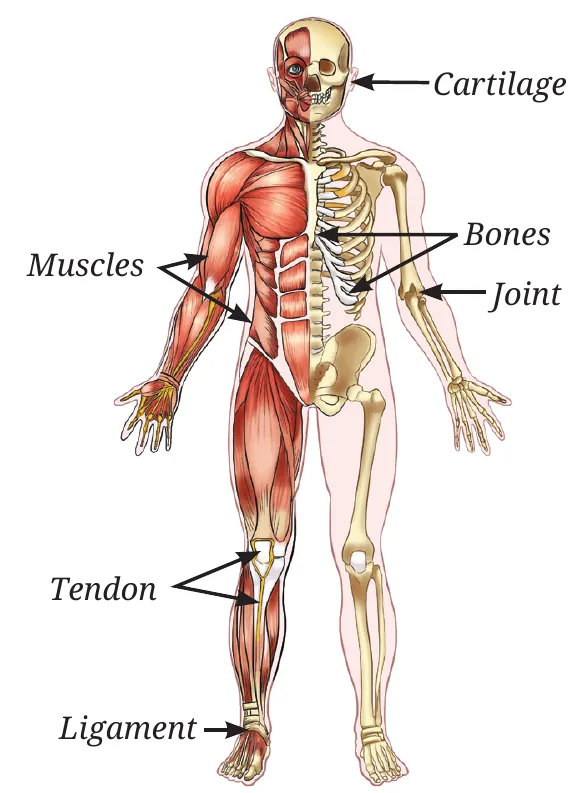
The musculoskeletal system = bones + muscles + joints + cartilage + tendons + ligaments. It lets us stand upright, move, keep our posture and protect delicate organs.
- Nerve sends a signal
- Muscle contracts (shortens)
- Tendon passes the pull to the bone
- Bone moves at a joint
Muscles can only pull, never push. The whole system works under the control of the nervous system.
⚖️ Activity 3.4: How much of you is bone and muscle?
Enter your body weight. Adults: bone about 12–15% of body weight; muscle about 40–50% (males) or 30–40% (females). These are averages and vary with age and fitness.
Types of joints
A joint is a place where two or more bones meet. Joints allow movement, but cannot move bones by themselves: muscles pull the bones. How far a joint can move depends on the shape of the bone ends.
Activity 3.5: Which way does each part move?
| Body part | Complete rotation | Partial rotation | Bending (up-down / side) | Joint |
|---|---|---|---|---|
| Elbow | No | No | Yes | Hinge |
| Shoulder | Yes | Yes | Yes | Ball and socket |
| Knee | No | No | Yes | Hinge |
| Neck | No | Yes | Yes | Pivot |
| Fingers | No | No | Yes | Hinge |
| Toes | No | No | Yes | Hinge |
| Wrist | No | Yes | Yes | Gliding (side to side, up-down) |
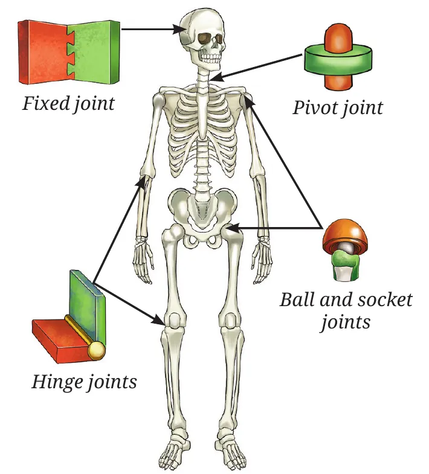
🦴 Try it: joint movement explorer
Pick a joint and watch how much it can move.
3.5.1 Ball and socket joint shoulder, hip
The rounded head of the upper arm bone sits in a shallow cup of the shoulder bone. Movement: forward, backward, sideways and all the way round. With the collarbone, the shoulder forms the shoulder girdle, which joins the arm to the skeleton.
3.5.2 Hinge joint elbow, knee, fingers
Bends and straightens in one direction only, like a door hinge. The knee is protected by a small bone, the kneecap.
3.5.3 Pivot joint neck (skull on backbone)
One bone turns around another, like a doorknob. Lets you shake your head "no" (side to side).
3.5.4 Fixed joint skull
The flat skull bones are locked together and cannot move. This keeps the brain safe even when the body moves.
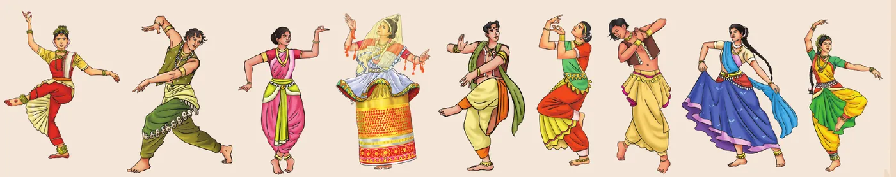
🩸 Ready to go beyond: stem cells
Bone marrow contains stem cells that can divide and make new blood cells. In a bone marrow transplant, stem cells from a healthy donor are given to patients with blood cancers such as leukaemia or disorders such as thalassaemia.
Skeletal system
The skeletal system is the body's framework of bones. It gives strength and protects soft organs. Its main parts:
Skull protects brain, eyes, ears
Flat bones joined by fixed joints.
Backbone (vertebral column, spine) supports, keeps us upright
A flexible chain of small bones called vertebrae, starting from the base of the skull. A cartilage disc between each pair works as a cushion and lets us bend and twist without hurting the spinal cord inside.
Rib cage protects heart and lungs
12 pairs of ribs, joined to the backbone at the back and the breastbone (sternum) in front by flexible cartilage. This flexibility lets the cage expand and shrink as we breathe, moving air in and out of the lungs. That is why a rib injury makes breathing painful.
🧘 Bridging science and society: Yoga
Yoga, from ancient Indian texts, combines postures, breathing and meditation. It improves flexibility, posture and breathing, lowers stress and helps prevent lifestyle diseases. 21 June is International Yoga Day. Good posture, food, exercise and yoga keep bones strong, muscles fit and joints flexible.
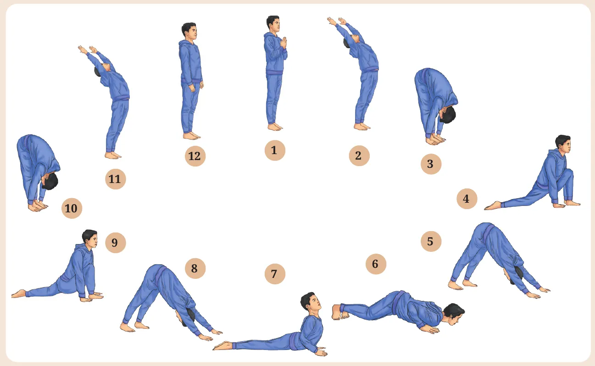
Totipotency and tissue culture
Think as a scientist: one cell → a whole plant
In 1958, F. C. Steward took cells from the phloem of a carrot and grew them in a nutrient liquid with sugars and hormones. The cells divided into a lump, and the lump slowly grew into a complete carrot plant. He was the first to do this.
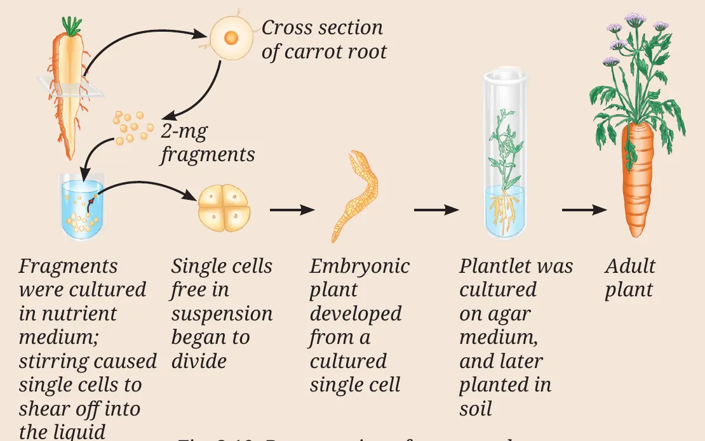
- Mature phloem cell (specialised, not dividing)
- Dedifferentiation: it regains the ability to divide
- Mass of unspecialised cells
- Redifferentiation: forms roots, shoot, embryo
- Complete new plant
Table 3.6: Steward's results
| Light | Air | Medium | Change in fresh weight |
|---|---|---|---|
| ✓ | ✗ | Solid + nutrients | Reduced |
| ✓ | ✓ | Liquid + nutrients | 20% increase |
| ✗ | ✓ | Liquid + nutrients | Reduced |
(a)What do you conclude about the phloem cells of carrot?
(b)Which combination gives the highest and the lowest biomass, and why?
Lowest: the other two both lost weight. In the solid medium without air, cells lack oxygen for respiration and get fewer nutrients; in the dark, cells cannot photosynthesise and use up their stored food. The table does not give exact numbers, but the no-air set-up is likely the worst because without oxygen cells cannot release energy at all.
(c)Would animal cells give the same result?
(d)Two commercial applications?
2. Saving rare or endangered plants, and making genetically improved crops or medicinal chemicals from cultured plant cells.
Bridging science and society: crown gall
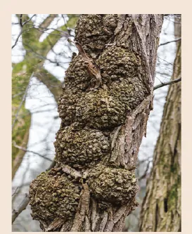
Crown gall is a plant disease with tumour-like swellings on stems, caused by uncontrolled cell division. It is caused by the bacterium Agrobacterium tumefaciens, which inserts its own genes into plant cells.
Scientists turned this trick into a tool: today Agrobacterium is used to put useful genes into plants to make better crops, disease-resistant varieties and valuable plant chemicals.
Which tissue am I?
Read the clue and pick the tissue.
At a glance
- A tissue is a group of similar cells working together for a specific function. Tissues bring division of labour.
- Plant tissues: meristematic (can divide) and permanent (cannot divide).
- Meristems: apical (length), lateral (girth, annual rings), intercalary (regrowth). Their cells are small, thin-walled, with big nuclei, dense cytoplasm and no vacuoles.
- Differentiation turns meristem cells into permanent tissue.
- By function: protective (epidermis, cork), supporting (parenchyma, collenchyma, sclerenchyma), conducting (xylem, phloem).
- Simple tissue = one cell type; complex tissue = several cell types (xylem, phloem).
- Xylem: water and minerals upward, mostly dead. Phloem: food both ways, mostly living.
- Three plant tissue systems: dermal, ground, vascular.
- Animal tissues: epithelial (covers and lines), connective (blood, bone, cartilage, tendon, ligament), muscular (skeletal, smooth, cardiac), nervous (neurons).
- Tendon: muscle to bone. Ligament: bone to bone.
- Joints: ball and socket, hinge, pivot, fixed.
- Skeleton = skull + backbone (vertebrae) + rib cage (12 pairs). Movement = muscles + bones, controlled by the nervous system.
- Some plant cells are totipotent: one cell can regrow a whole plant (tissue culture).
🔭 The journey beyond
- Ask a doctor about ligament tears, cartilage damage and fractures, and how food and lifestyle reduce the risk.
- Sit with feet flat, hold the back of your ankle just above the heel and point your toes up and down: you will feel the Achilles tendon move. Find tendons at other joints.
- Think how yoga or kabaddi builds bone and muscle; how pruning, grafting and irrigation help meristems and conducting tissues.
- On a nature walk, compare leaves from dry, wet and water habitats (thick cuticle? waxy? floating?). Ask elders about leaves used for plates, cooling wraps or keeping insects away.
- Learn five steps of a tribal dance and list the joints each step uses.
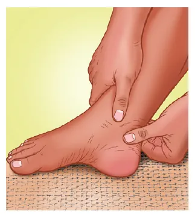
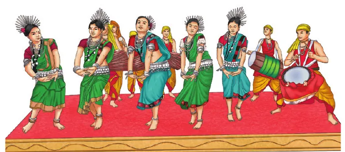
✨The quest continues: can we get a complete animal from one animal cell, like plants? Advantages and challenges?
Advantages: saving endangered animals, copying high-yield farm animals, growing tissues and organs for transplant from a patient's own cells.
Challenges: very low success rate, health problems in clones, high cost, loss of genetic variety, and ethical questions.
Test yourself
Tap an option to see the right answer and the reason.
1. Grass grows back after grazing because of the
Intercalary meristem at the nodes / base of internodes lets grass regrow after its tips are eaten.
2. The increase in girth of a tree trunk is due to
A ring of lateral meristem adds new cells inside and outside, making annual rings.
3. Which tissue has living cells with walls thickened at the corners by pectin?
Collenchyma: corner thickening with pectin gives flexible support.
4. The only living component of xylem is
Tracheids, vessels and fibres are dead; xylem parenchyma is living.
5. Loading and unloading of sugar in sieve tubes is managed by
Companion cells are specialised parenchyma cells beside sieve tubes.
6. Coconut husk fibres are made of
Dead cells with thick lignified walls make the husk hard and fibrous.
7. Epithelium of the small intestine that absorbs food is made of
Tall columnar cells with hair-like projections give a large surface for absorption.
8. Bone is joined to bone by
Ligaments join bones and limit movement; tendons join muscle to bone.
9. Muscle fibres that are branched, have one nucleus and faint striations are
Cardiac muscle, found only in the heart, works rhythmically without tiring.
10. The part of a neuron that receives signals from other neurons is the
Dendrites receive; the axon carries the message away; terminals pass it on.
11. Shaking the head to say "no" uses a
The skull turns on the backbone at a pivot joint, like a doorknob.
12. Plasma makes up about what share of blood volume?
Plasma about 55%; formed elements (RBCs, WBCs, platelets) about 45%.
13. The ability of a single carrot phloem cell to form a whole plant is called
Totipotent cells can dedifferentiate, divide and redifferentiate into a full plant (F. C. Steward, 1958).
14. The rib cage can expand during breathing because ribs are joined to the sternum by
Cartilage is flexible, so the cage can expand and contract.
Answers to all questions
Tap a question to see the answer. Use Print or save as PDF at the top to get all answers open.
Pause and Ponder
1.Coconut husk fibres are hard and brittle, but coriander leaf stalks are soft and flexible. Why?
2.Why is a thick cuticle useful for a desert plant but a problem for a plant living underwater?
Underwater: water is everywhere and there is no risk of drying. The plant takes in water, minerals and dissolved gases directly through its surface, and a thick cuticle would block this. That is why water plants have a thin or no cuticle.
3.How do the "dead" xylem cells work with the living leaf cells to keep water moving up against gravity?
4.What would happen if there were no stomata in the epidermis of stems or leaves?
5.In the dance poses of Fig. 3.17, which joints are used and what movement does each allow?
- Shoulders and hips (ball and socket): arms raised overhead or swept in circles, legs lifted sideways or turned out.
- Elbows, knees and fingers (hinge): bending of arms in mudras, the bent-knee stance (as in the half-sitting position of Bharatanatyam).
- Neck (pivot): side-to-side head movements.
- Wrists and ankles: turning the hands in mudras, standing on toes or heels (gliding/hinge-like movement).
- Skull (fixed): no movement, protects the brain while dancing.
Revise, Reflect, Refine
1.Meristematic tissues divide repeatedly. Which property allows this? (i) thick walls (ii) large vacuoles (iii) thin walls, dense cytoplasm, large prominent nucleus (iv) differentiated cells
2.If a plant cannot transport food from leaves to roots, which tissue is malfunctioning? (i) Xylem (ii) Phloem (iii) Epidermis (iv) Sclerenchyma
3.Why is the epithelium lining internal organs usually only one or a few cells thick? (i) store food (ii) maximum strength (iii) quick exchange of materials (iv) reduce friction
4.Compare the straight-leg jump (knees and ankles stiff) with a normal jump (knees and ankles bent). How did ankle, knee and hip positions differ?
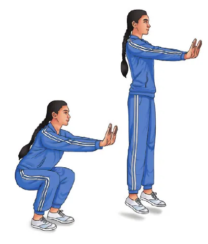
Normal jump: first the ankles bend, knees bend and hips bend (a crouch, as in the left figure); then all three straighten together with force. The muscles get a longer push, so the jump is higher, and on landing the joints bend again to cushion the impact. The ankle, knee and hip work as hinge-type joints together with muscles and tendons.
5.Which type of joint is involved when you bend your knees and ankles? (i) Ball and socket (ii) Hinge (iii) Pivot
6.Assertion-Reason. Options: (i) both true, R explains A; (ii) both true, R does not explain A; (iii) A true, R false; (iv) A false, R true.
A. A: Epithelium is well suited for gas exchange in the lungs. R: It has many layers of tall cells that slow diffusion. → (iii). The assertion is true, but lung epithelium is a single layer of thin, flat cells; many layers would slow exchange.
B. A: Cardiac muscle contracts continuously without fatigue. R: Its cells have many mitochondria and a rich blood supply. → (i). Plenty of mitochondria and blood give a constant supply of energy and oxygen, which explains why it does not tire.
C. A: Tendons connect bone to bone and allow joint movement. R: Tendons are tough connective tissue that transmits force from muscle to bone. → (iv). Tendons connect muscle to bone; ligaments connect bone to bone. The reason is correct.
D. A: In a hinge joint, movement is mainly in one plane. R: The bone ends are shaped to slide in all directions. → (iii). The bone ends of a hinge joint are shaped to allow movement only in one plane; sliding in all directions would not be a hinge.
7.Plot age of a teak tree (x-axis) against diameter (DBH) and number of annual rings (y-axis) from Table 3.7, and interpret.
| Age (years) | 5 | 10 | 20 | 25 | 30 | 40 |
|---|---|---|---|---|---|---|
| DBH (cm) | 4 | 8 | 24 | 28 | 32 | 40 |
| Annual rings | 5 | 10 | 20 | 25 | 30 | 40 |
(i) The diameter keeps increasing with age, so the stem grows thicker every year. Growth is not equal every year: it is about 0.8 cm per year from 5 to 10 years, fastest (1.6 cm per year) between 10 and 20 years, and about 0.8 cm per year after 20 years. So the tree grew fastest in its young-adult years (or those years had better rain and climate).
(ii) The number of rings is always equal to the age (one ring per year), so the rings line is a straight line. Diameter rises as the number of rings rises, but not in exact proportion, because some rings are wide (good years, 10–20) and some narrow. Diameter = sum of the widths of all rings on both sides.
(iii) The lateral meristem (vascular cambium), present as a ring in the stem between the xylem and the phloem, is responsible for the increase in girth.
8.An elephant severely debarked a tree to eat the bark. (i) Which functions are hampered? (ii) Which tissue is affected by further damage? (iii) Which function is hampered if tissues beneath the bark are damaged? (iv) What assumptions are you making?
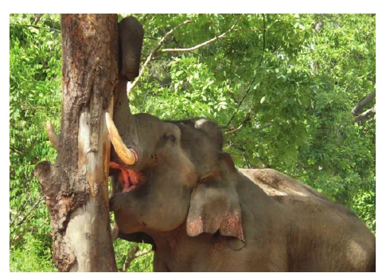
(i) Protection: the bark (cork) keeps out water loss, germs, insects, fire and injury. Without it the trunk dries and gets infected. Since the phloem lies just inside the bark, part of it is often torn off too, so food transport to the roots is also affected.
(ii) The phloem first, then the lateral meristem (cambium) and the outer xylem.
(iii) If phloem is destroyed, food cannot reach the roots; the roots starve and slowly die, and then the whole tree dies. If the cambium is destroyed, growth in girth stops at that spot and the wound cannot heal. Deeper damage to xylem cuts the upward flow of water.
(iv) Assumptions: the bark was removed from only part of the trunk (not a complete ring), and only the outer layers were removed. If bark and phloem were removed all around the trunk (a full ring, called girdling), the roots would starve and the tree would surely die. If only a small patch was removed, the tree could survive and form new cork from the cork cambium to heal the wound.
9.A young mango sapling bends in monsoon winds without breaking. Which tissue gives this flexibility? What if it were replaced by sclerenchyma?
10.Sohan planted sugarcane cuttings of type A and type B. Only type B sprouted. Explain.
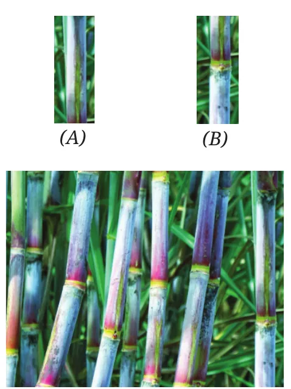
(i) Type B cuttings had a node with a bud and meristematic (intercalary) tissue, whose cells can divide to form a new shoot and roots. Type A was only a piece of internode, made of permanent tissue that cannot divide, so it could not sprout.
(ii) Type B contained a node (bud); type A did not.
(iii) Whether the cuttings sprouted (new shoots and roots appeared), and how many sprouted, or the length of the shoots after a few weeks.
(iv) Same sugarcane variety and age, same length and thickness of cutting, same soil, water, sunlight and temperature, same planting depth and same number of days.
11.Rohan: "A tissue is a group of similar cells performing similar functions." Rajiv: "True for simple tissues, but different for complex tissues." Explain.
12.Coconut husk fibres make tough mats. Which tissue gives this strength? Why couldn't living parenchyma do it?
13.Vibha says meristematic cells are found only at root and shoot tips. Is she right? What can Neha ask her?
14.A plant cell and an animal cell are the same size. (i) Which has a larger vacuole? (ii) What are you assuming?
(ii) Assumptions: both are mature, ordinary cells. If the plant cell were a meristematic cell, it would have no vacuole. Some special animal cells (like fat cells) store material in large vesicles.
15.A textbook says "Each plant tissue performs only one specific function." What questions would you ask to check this, and which examples would you use?
Examples show the statement is not correct:
- Parenchyma: stores food, photosynthesises in green parts, and gives buoyancy in aquatic plants.
- Epidermis: protects, but also has stomata for gas exchange and transpiration, and root hairs for absorption.
- Xylem: conducts water and minerals and also gives strength.
- Phloem parenchyma: stores food, resin, tannins and latex.